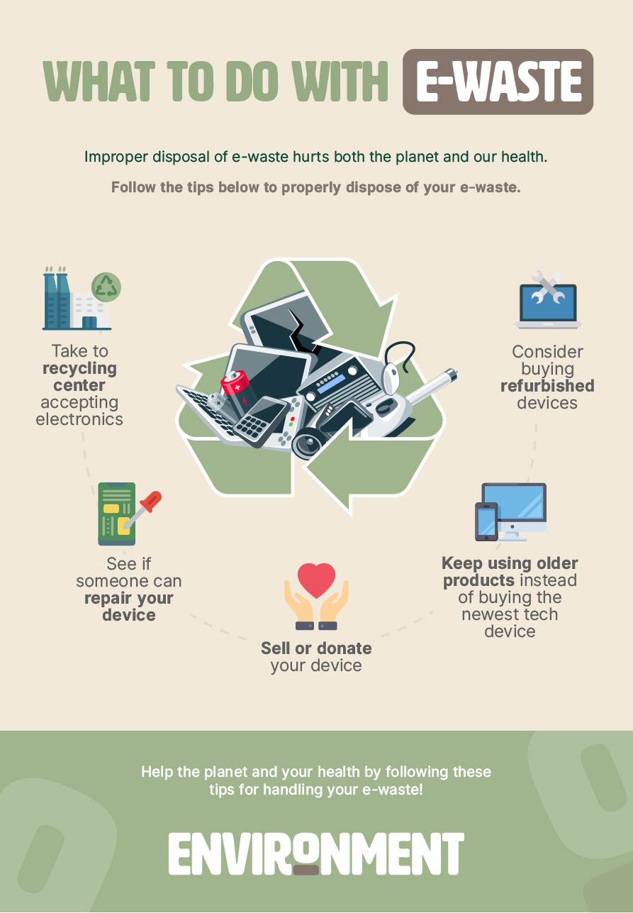

Awareness
What is E-Waste?
E-waste refers to discarded electronic devices and components, such as computers, smartphones, and televisions, that are no longer in use. These devices contain valuable materials but also hazardous substances that can harm the environment if not properly managed.

How to Deal with E-Waste
Dealing with e-waste involves both prevention and management strategies. It's crucial to reduce electronic consumption, reuse devices when possible, and extend their lifecycle through proper maintenance. By signing up for pick-up requests on our website, we ensure that whatever waste you have, is carefully collected and taken to recycling centres near you.
How to Dispose of E-Waste Responsibly
Proper disposal of e-waste involves recycling through certified facilities that can extract valuable materials and safely handle hazardous components. Avoid landfill disposal to prevent environmental contamination.
SDGs and E-Waste Management
Managing e-waste aligns with several Sustainable Development Goals (SDGs), including Goal 12 (Responsible Consumption and Production) and Goal 13 (Climate Action). By recycling electronics, we reduce waste, conserve resources, and mitigate climate impact.